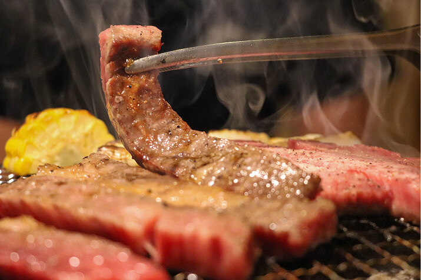

profile
プロフィール
松山 里貴弥
matsuyama rikiya高校卒業後約7年間、製造業と建設業に従事。 将来を考えたことをきっかけに、Web制作に興味を持ち、2023年9月にデジタルハリウッドに入学。 学習を通じて、コードが画面に反映される楽しさや、できなかった実装を完成させる達成感を味わい、Webコーダーを志望するように。 現在は家業と両立しながら就職活動を行う。

about
profile
松山 里貴弥
matsuyama rikiya高校卒業後約7年間、製造業と建設業に従事。 将来を考えたことをきっかけに、Web制作に興味を持ち、2023年9月にデジタルハリウッドに入学。 学習を通じて、コードが画面に反映される楽しさや、できなかった実装を完成させる達成感を味わい、Webコーダーを志望するように。 現在は家業と両立しながら就職活動を行う。
strengths
製造業では、不良品の原因が金型のガス汚れにあると突き止め、洗浄間隔を見直すことで不良品数を約30％削減しました。この経験を活かし、Web制作でも不具合の原因を分析し、適切な改善策を考えて品質向上に貢献します。
01製造業では、金型交換時の作業方法を工夫し、昇温待ち時間を約1時間から20分に短縮しました。この経験を活かし、Web制作でもコードの記述方法や作業手順を見直し、品質を維持しながら制作効率の向上に貢献します。
02建設業では、現場作業に必要な体力を維持するため、週3〜5回のトレーニングを継続しました。その結果、資材運搬後も安定して作業できるようになりました。この継続力を活かし、Web制作でも学習を積み重ね、技術力を高めていきます。
03career
like
MMAやキックボクシング、空手を中心に幅広い競技を鑑賞しています。 試合当日の結果はもちろん、そこに至るまでの過酷な特訓を乗り越えること選手たちにかっこ良さを感じています。

月1は必ず食べるほどの焼肉好きで、特に、ご飯と一緒に食べるカルビは格別です。 最近はマルチョウにはまっており、焼肉に対する想いは強くなる一方です。
バトルアニメを中心に鑑賞しており、中でも「ドラゴンボール」や「NARUTO」が大好きです。 バトル以外にはクレヨンしんちゃんを鑑賞しています。